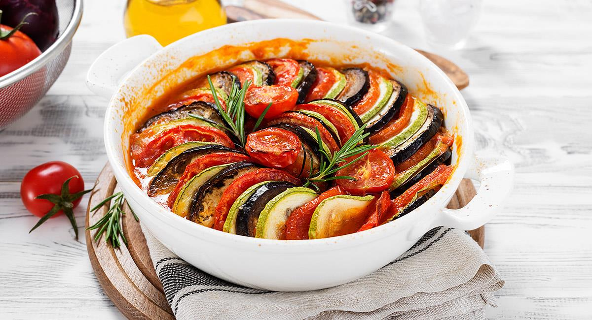

Ratatouille

Famous dish from the movie with the same name
French dish made of stewed vegetables, originated in the prefecture of Nice.
Ingredients (vegetables)
- 2 eggplants
- 6 roma tomatoes
- 2 yellow squashes
- 2 zucchinis
For herb seasoning
- 2 tablespoons chopped fresh basil, from 8-10 leaves
- 1 teaspoon garlic, minced
- 2 tablespoons Chopped fresh parsley
- 2 teaspoons fresh thyme
- salt, to taste
- pepper, to taste
- 4 tablespoons olive oil
For sauce
- 2 tablespoons olive oil
- 1 onion, diced
- 4 cloves garlic, minced
- 1 red bell pepper, diced
- 1 yellow bell pepper, diced
- salt, to taste
- pepper, to taste
- 28 oz can of crushed tomatoes(795 g)
- 2 tablespoons chopped fresh basil, from 8-10 leaves
Steps
- Preheat the oven for 375˚F (190˚C).
- Slice the eggplant, tomatoes, squash, and zucchini into approximately ¹⁄₁₆-inch (1-mm) rounds, then set aside.
- Make the sauce: Heat the olive oil in a 12-inch (30-cm) oven-safe pan over medium-high heat. Sauté the onion, garlic, and bell peppers until soft, about 10 minutes. Season with salt and pepper, then add the crushed tomatoes. Stir until the ingredients are fully incorporated. Remove from heat, then add the basil. Stir once more, then smooth the surface of the sauce with a spatula.
Arrange the sliced veggies in alternating patterns, (for example, eggplant, tomato, squash, zucchini) on top of the sauce from the outer edge to the middle of the pan. Season with salt and pepper.
- Make the herb seasoning: In a small bowl, mix together the basil, garlic, parsley, thyme, salt, pepper, and olive oil. Spoon the herb seasoning over the vegetables.
- Cover the pan with foil and bake for 40 minutes. Uncover, then bake for another 20 minutes, until the vegetables are softened.
- Serve while hot as a main dish or side. The ratatouille is also excellent the next day--cover with foil and reheat in a 350˚F (180˚C) oven for 15 minutes, or simply microwave to desired temperature.